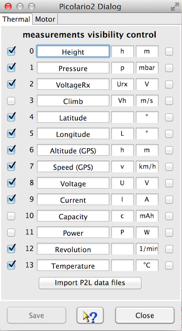

The device dialog should be used to configure the visualization of measurements. It is possible to update measurement names and symbols. Even if the measurement units are editable it makes less sense to do without adding a measurement factor in respect to the change. Unchecked measurement will not be displayed. This will lead to a more clear representation, curves which are hard to be interpreted in two dimensional way, may be blanked out. It is possible to import data files using the 'import P2L data files' button as well. Curves without reasonable data are not displayed. As example, if no GPS is connected the GPS relevant curves doesn't get displayed. The GPS data measurement values are the once which have a strict alignment to measurement ordinals to enable a check of reasonable GPS data and diplay export capabilities. While GPS data are available it is possible to load and display such data in Google Earth using KMZ files. This files can be exported using the file menu or directly launched to an installed Google Earth application. How to do so, refer to Toolbar -> Google Earth.

At the right hand side of the configuration panel are check boxes which enable a semi automatic scale synchronization. While checking measurement name will be compared to previous once and the fitting measurement ordinal will be added to the measurement configuration entry. Using scale synchronization will reduce the required space for scales and spend more for the graphics. Overlaying curves in this matter will allow direct comparison without using the curve compare window.
Hint: While changing curve names, symbols units or synchronization entries the device configuration file gets changed. With a later version of DataExplorer the device properties schema might change (DeviceProperties_Vxy.xsd), in this case a backup copy of the complete device configurations will be created (Devices_Vxy-1.xsd) and your change will remain there. The out dated device configuration file can be used as template to update the new version.